Platform Template Generation
New platforms are always welcomed with open arms! If you'd like to add your platform's support, this article will guide you through the process.
What you'll need
The XRTK uses a template repository to quickly add new platform support. You'll need to either clone this or, if you're a contributor to the XRTK team directly, you can create a new repository using this as a template.
Getting Started
Create a new repository on Github using the template repository:


Clone the new Repository


Navigate to the root of the new repository and run
InitializeTempalte.ps1using the command line
Type the name of your new project and press
Enter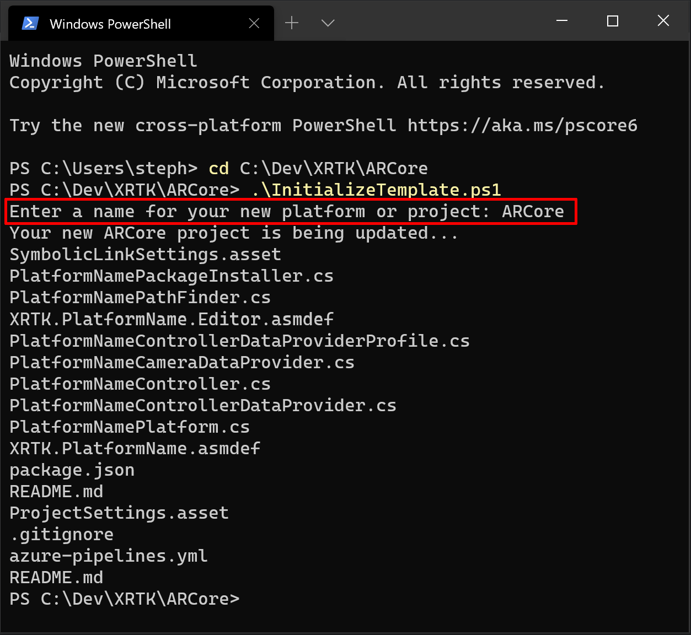Stage, Commit, and Push the updated files directly to the new master branch origin

Create the development branch and push it to the origin 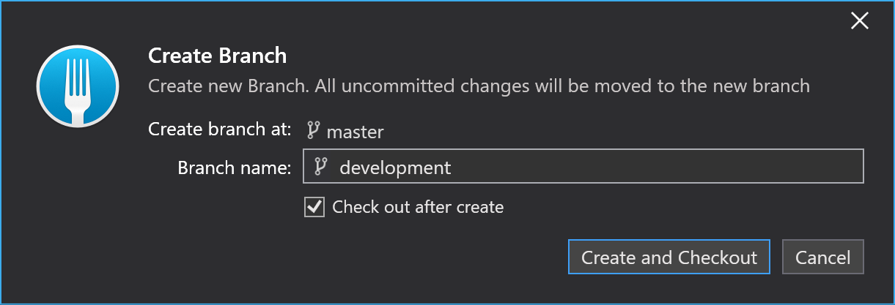
This branch should be at the same checkout as your master branch

Open the new project in Unity and verify the project is setup correctly

Create a new branch and push the updated changes to the meta files and generated links
 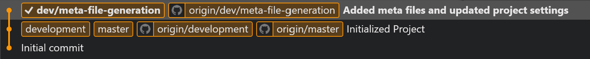
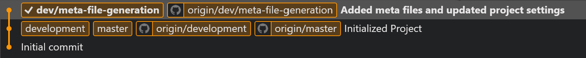Back in GitHub, navigate to the project's settings
- Update the following features:
 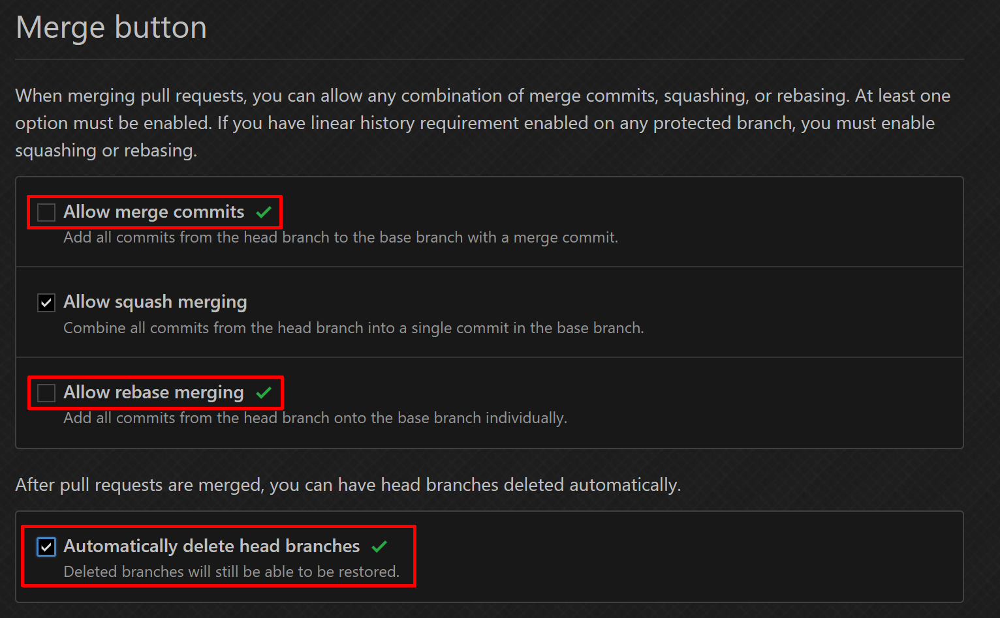
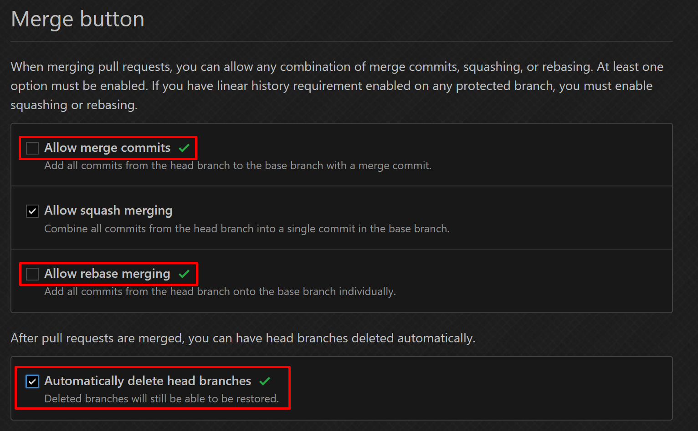
- Update the following features:
Update the default branch to
development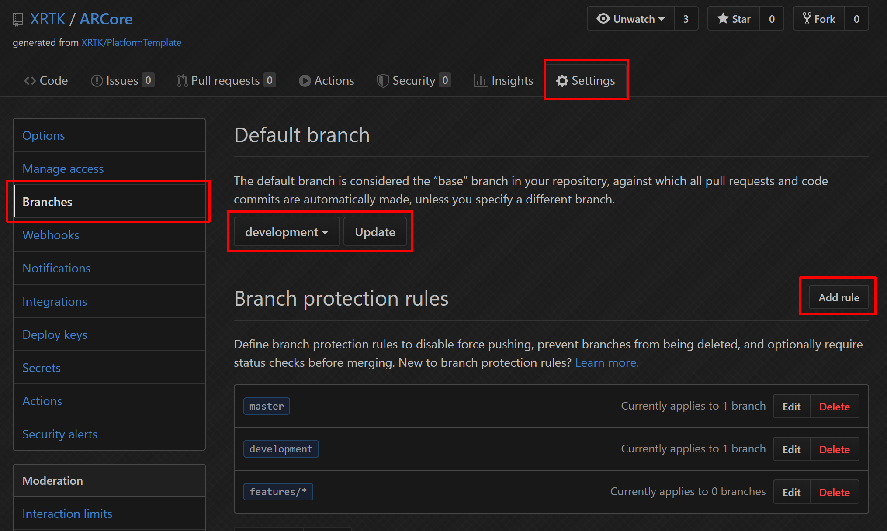Add branch protection rules to
master,development, andfeatures/*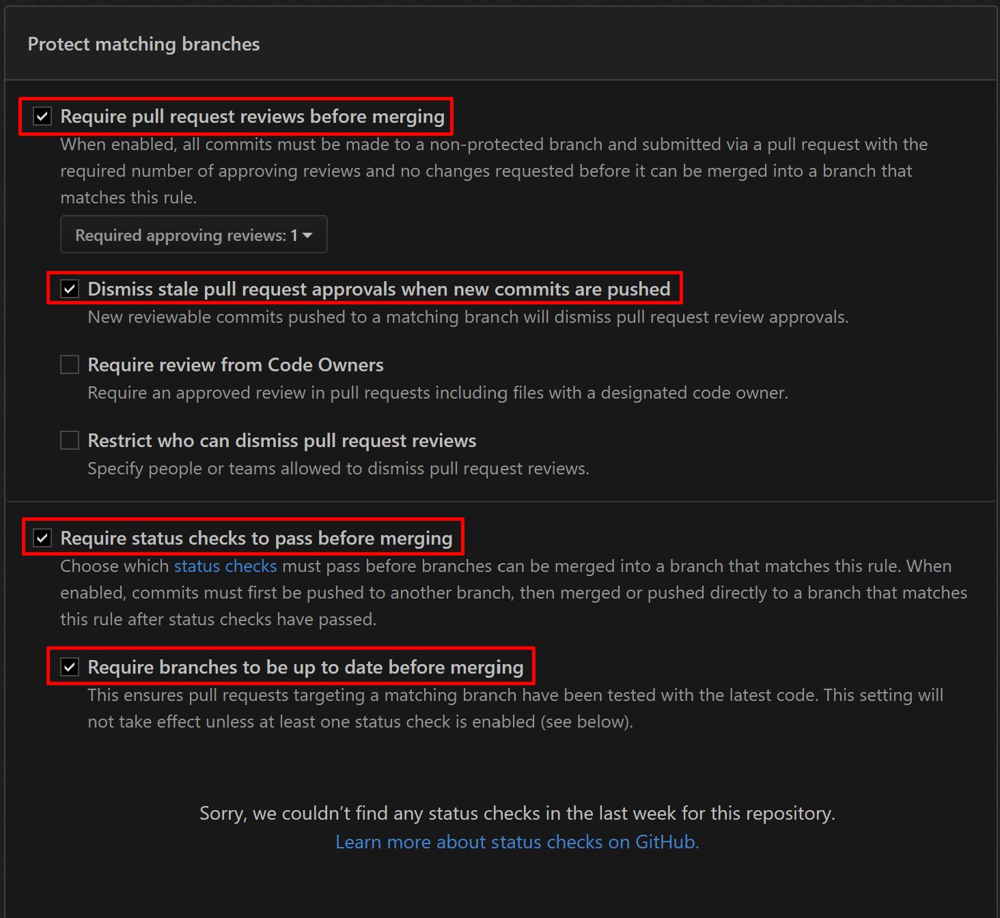Note: The required status checks will not show until the pipeline has ran at least once. You'll need to come back and enable this once the pipeline is setup and the initial PR is opened.
Note: The
features/*rule will have have an additional settingAllow deletionsso that they can be removed after the PR is compelted.Create a new Pipeline in Azure Devops 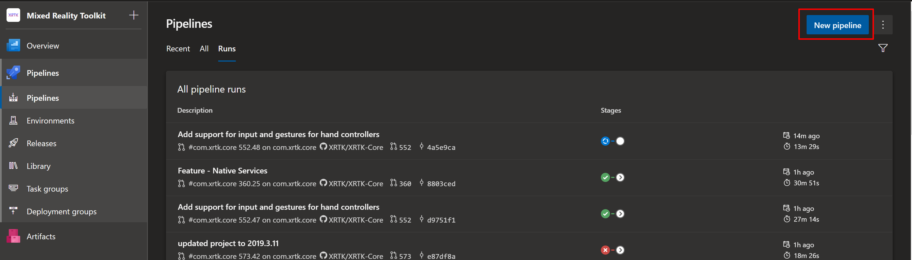
Note: This step requires an admin to the XRTK to complete. If you're using the project template in your own devops envirionment then the steps are the same.
Select the GitHub repository in the pipeline wizard


Save the pipeline

Edit the pipeline and update the name and triggers
 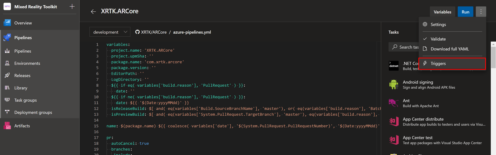
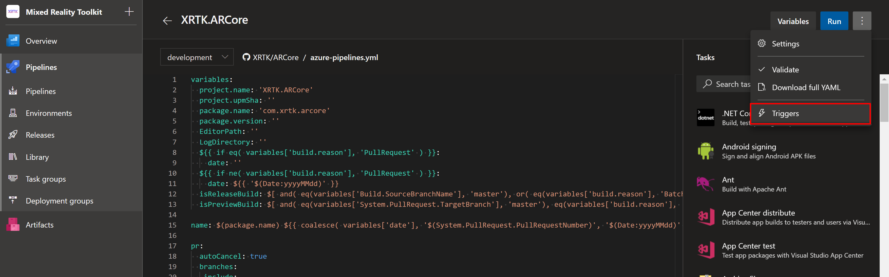 
Save the pipeline, but DO NOT RUN! 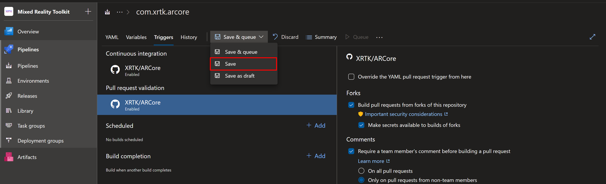
Open a pull request in your new GitHub repository for the meta file changes


Note: You should see status checks start once Pull Request is opened
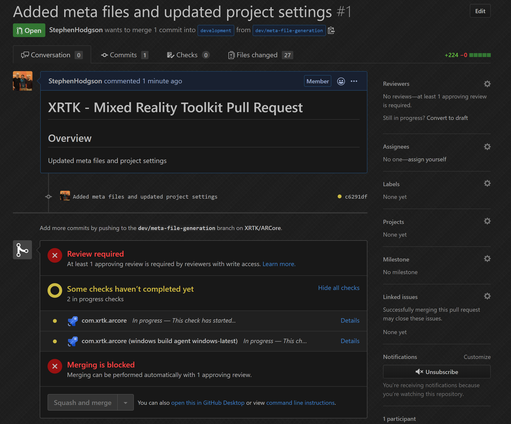
Note: Once the status checks have ran at least once, you can go back to your branch protection rules and add the check

Raise an Information Request
If there is anything not mentioned in this document or you simply want to know more, raise an RFI (Request for Information) request here.